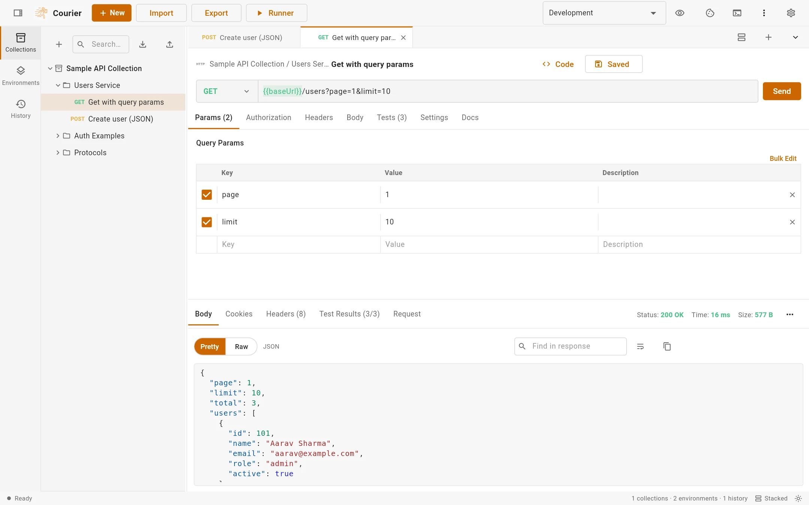
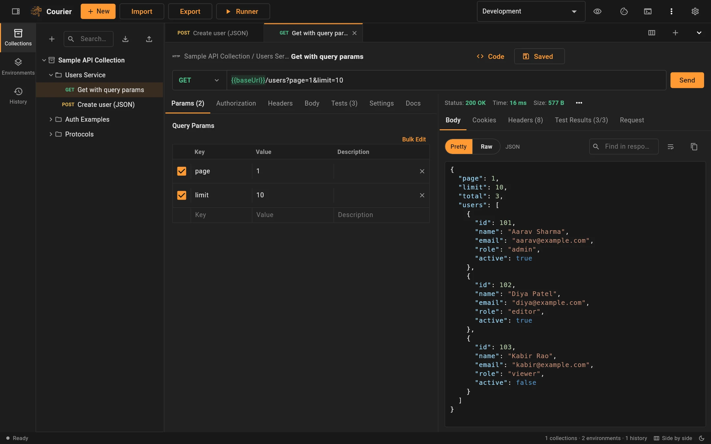
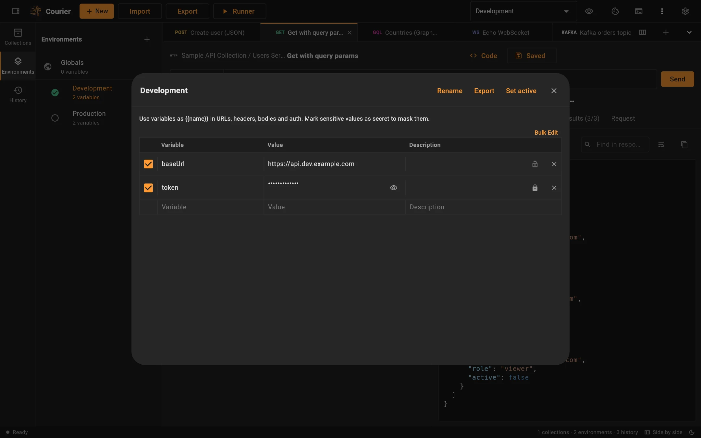
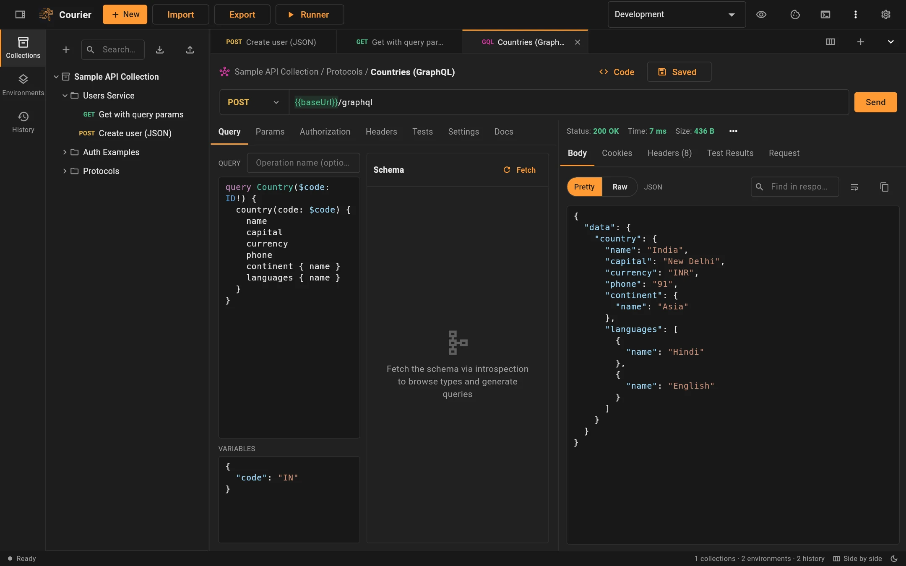
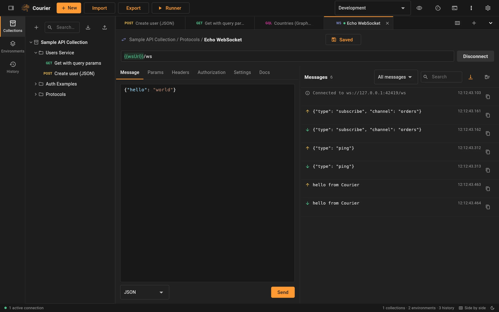
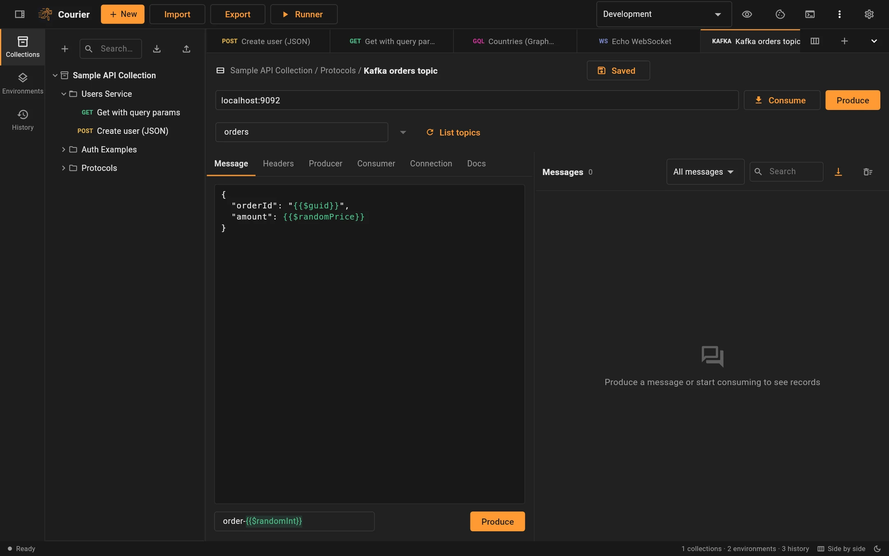
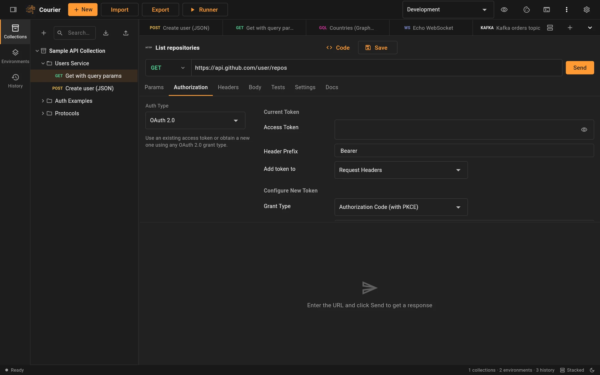
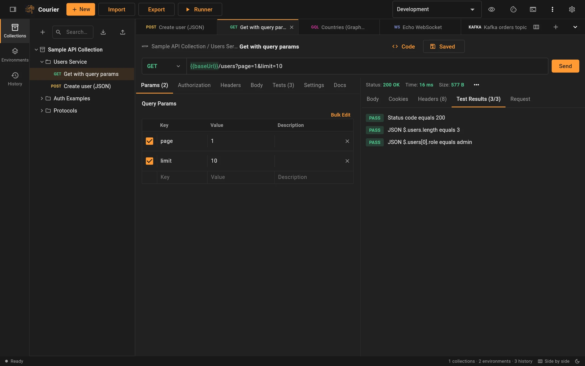
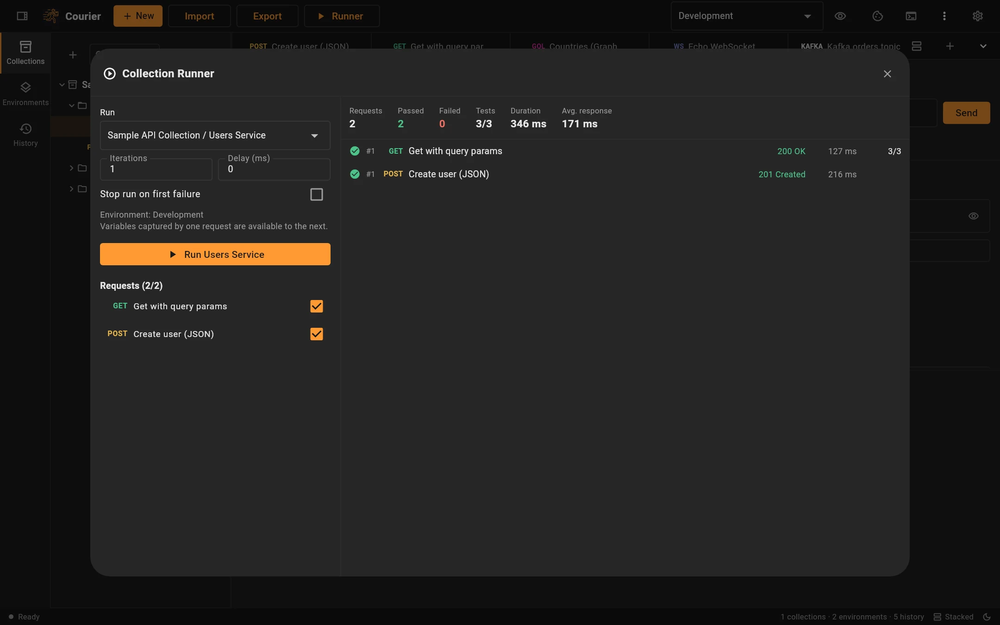
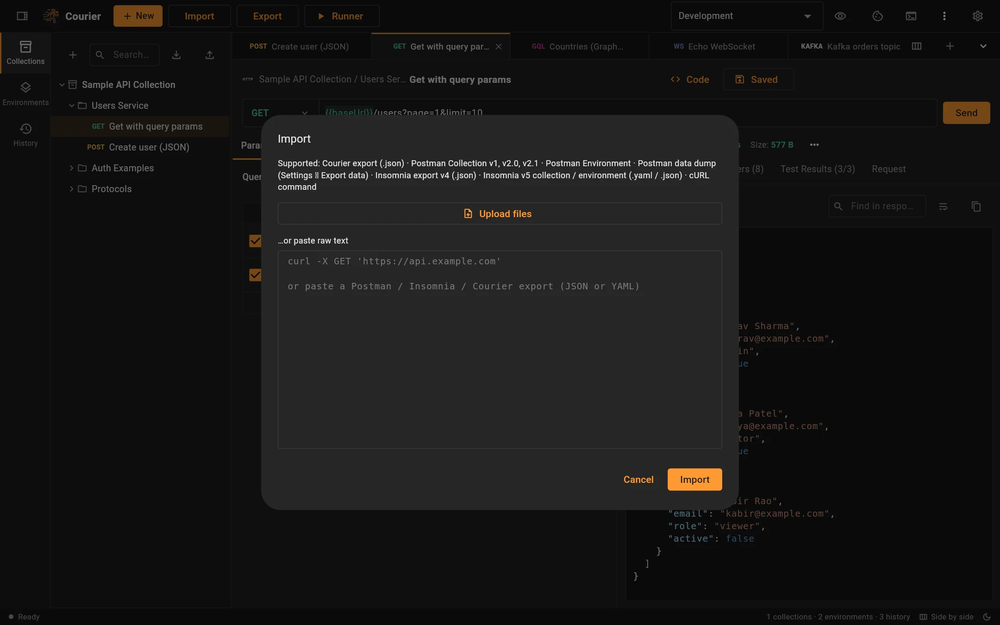

Courier documentation
Courier is a free, open-source desktop app for testing APIs. This guide covers installing it, sending your first request, and every feature after that. Each section stands on its own, so jump to whatever you need.
Install #
Courier runs on Windows 10/11, macOS 12 or newer (Apple Silicon and Intel), and 64-bit Linux. The install page has buttons and copyable commands for each system. In short:
| System | How to install |
|---|---|
| Windows | Download and run Courier-Setup-1.0.0-x64.exe from the latest release. |
| macOS | brew install --cask ranefattesingh/tap/courier, or download the .zip. |
| Ubuntu / Debian | Add the apt repository, then sudo apt install courier-api. |
| Fedora / RHEL | Add the dnf repository, then sudo dnf install courier-api. |
| Other Linux | Extract courier-linux-x64.tar.gz and run courier. |
courier (a mail server), so Courier’s Linux package and command are named courier-api. The app itself is still called Courier in your menu.Your first request #
Courier opens with a Sample API Collection so you can try things straight away. To send a request of your own:
- Click + New in the top bar and choose HTTP. A new tab opens.
- Pick a method (
GETis selected) and type a URL, for examplehttps://httpbin.org/get?name=courier. The Params table fills in as you type. - Click Send or press Ctrl Enter (⌘ Enter on a Mac).
- The response appears with its status, time and size. Switch between Pretty and Raw, or look at Headers and Cookies.
- Press Ctrl S to save the request into a collection so you can find it again.


{{baseUrl}} variable, and the response shows 3 of 3 tests passing.A tour of the window #
- Top bar: + New, Import, Export and Runner on the left. On the right, the environment picker, then buttons for a variables quick look (eye), cookies, the console and settings.
- Sidebar: switch between Collections, Environments and History. Hide it with the panel button at the top left.
- Tabs: every open request has a tab. A dot means unsaved changes. Use the layout button at the right of the tab strip to show the response below the request or beside it.
- Request editor: the URL bar and tabs such as Params, Authorization, Headers, Body, Tests, Settings and Docs. Each protocol has its own set.
- Response panel: the result of the request, or a live message log for connections like WebSocket.
- Status bar: active connections on the left; counts, the layout switch and the theme switch on the right.
Collections and folders #
A collection groups the requests for one project or service. Inside it, you can create folders and sub-folders as deep as you like, for example one folder per microservice and a sub-folder per resource.
- Create: + New → Collection, or the + at the top of the sidebar. Add folders from a collection’s right-click menu.
- Act on anything: right-click an item, or use its ⋯ button, to open, rename, duplicate, export or delete it.
- Move and reorder: drag requests and folders to a new place.
- Find: type in the sidebar search box to filter the tree. Matching folders open automatically.
- Shared settings: Edit collection sets auth and collection variables for everything inside. Edit folder sets auth for that folder. Requests set to Inherit auth from parent use the nearest folder’s auth.
Environments and variables #
Variables let you write a value once and use it everywhere. Write {{name}} in a URL, header, body, auth field or message. Courier highlights it green when it’s defined and red when it isn’t.
Environments
An environment is a named set of variables, such as Development, Staging and Production, each with its own baseUrl and token. Pick the active one in the top bar, and every request switches over.
- Open the Environments section of the sidebar to add, edit, rename, export or delete environments.
- Mark sensitive values as secret (the lock icon) to mask them on screen.
- Globals are variables available everywhere, whatever environment is active.
- Click the eye icon in the top bar to see every variable the current request can use and where it comes from.

Which value wins
If the same name is defined in several places, the most specific one is used:
Global < Collection < Environment < values captured during a run.
Dynamic variables
These generate a fresh value every time a request is sent. Useful for unique IDs and test data.
| Variable | Example value |
|---|---|
{{$guid}}, {{$randomUUID}} | 3f2b8c1e-9d4a-4e6b-a0f1-7c5e2d9b8a10 |
{{$timestamp}} | Unix time in seconds, e.g. 1764000000 |
{{$timestampMs}} | Unix time in milliseconds |
{{$isoTimestamp}} | 2026-11-24T10:30:00.000Z (UTC) |
{{$randomInt}} | A whole number from 0 to 1000 |
{{$randomBoolean}} | true or false |
{{$randomFirstName}}, {{$randomLastName}}, {{$randomFullName}} | Mia, Patel, Mia Patel |
{{$randomUserName}} | mia412 |
{{$randomEmail}} | mia.patel@example.com |
{{$randomPhoneNumber}} | 555-123-4567 |
{{$randomCity}} | Lisbon |
{{$randomIP}} | 192.168.10.42 |
{{$randomPrice}} | 421.37 |
{{$randomWord}}, {{$randomWords}} | orbit, orbit ember pixel |
{{$randomColor}}, {{$randomHexColor}} | teal, #3fa2c4 |
{{$randomHex}}, {{$randomAlphaNumeric}} | 16 hex characters, 1 character |
{{$randomPassword}} | 15 random characters |
{{$randomDateFuture}}, {{$randomDatePast}} | A date within a year from now, or before now |
History, cookies and console #
- History (sidebar) lists every request you send, grouped by day. Click one to open it again. You can search it or clear it.
- Cookies (cookie icon in the top bar): cookies set by servers are stored and sent back automatically, like a browser. View, add or delete them here, or turn this off in Settings.
- Console (terminal icon): a log of every request sent, with the final URL, headers, body, status and timing. Handy when something doesn’t behave as expected.
HTTP / REST #
- Methods: GET, POST, PUT, PATCH, DELETE, HEAD, OPTIONS, TRACE and CONNECT.
- Params: query parameters stay in sync with the URL in both directions.
- Headers: add your own; the dropdown on the key field suggests common headers.
- Body: none, form-data (text fields and files), x-www-form-urlencoded, raw (JSON, XML, HTML, JavaScript or text, with a Beautify button), binary (send a file), or GraphQL.
- Paste cURL: paste a cURL command into the URL bar and it becomes a full request.
- Settings tab: override SSL verification, redirects and the timeout for this request only.
- Docs tab: write notes for the request.
Bulk Edit above any key/value table switches to a text view with one key:value per line. Prefix a line with // to disable it.
Reading the response
- Body: Pretty formats and colours JSON, XML and HTML; Raw shows the exact text; images are previewed. Search with the find box, toggle line wrapping, copy, or save to a file from the ⋯ menu.
- Cookies and Headers returned by the server.
- Test Results: which of your tests passed. See Tests.
- Request: exactly what was sent, after variables and auth were applied.
GraphQL #
Create a GraphQL request, enter the endpoint, and write your query on the left with variables as JSON underneath. Add an operation name if the document has several operations.
- Schema: click Fetch to load the schema with introspection. Browse types and fields, and click Generate operation to write a query for you.
- Subscriptions: start the query with
subscription, or use aws:///wss://URL. Courier connects over WebSocket (bothgraphql-transport-wsand the oldergraphql-wsprotocol) and shows each event as it arrives.

gRPC #
Courier calls gRPC services directly. There’s no code to generate and nothing else to install.
- Enter the server address, such as
localhost:50051. The lock button next to it switches between TLS and plaintext; addresses starting withgrpcs://use TLS automatically. - Load the service definition in one of two ways:
- Use server reflection: click Load methods via reflection. Works when the server has reflection turned on.
- Use .proto files: click Import .proto files and pick one or more files. Imports between them, nested types, maps, oneofs, enums and Google’s well-known types are supported.
- Choose a method. Click Generate example to fill in a sample message, then edit the JSON.
- Click Invoke. For streaming methods, click Invoke stream, then Send message as often as you need and End streaming when done.
Add metadata (gRPC headers) in the Metadata tab. The response shows the message as JSON, plus response metadata and trailers.
WebSocket #
Enter a ws:// or wss:// URL and click Connect. Add headers, query params, auth and sub-protocols before connecting if the server needs them.
Write a message as Text, JSON, XML, HTML or Binary (Base64) and click Send. The message log on the right shows sent (↑) and received (↓) messages with timestamps. Filter or search the log, copy any message, or download the whole log.

Socket.IO #
Works with Socket.IO v4 servers. Enter the server URL (include a namespace path like /chat if needed) and click Connect.
- In the connection settings, set the Handshake path (default
/socket.io), a Handshake auth JSON payload, and the Transport: WebSocket only, polling with upgrade, or long-polling only. - To send, enter an Event name and payload and click Send. Turn on Ack to wait for the server’s acknowledgement.
- Every event the server emits appears in the log, whatever its name.
MQTT #
Connect to an MQTT 3.1.1 broker using mqtt://, mqtts://, ws:// or wss://, for example mqtt://test.mosquitto.org:1883.
- Connection options: Client ID, username and password, Keep alive, Clean session, and an optional Last-will topic and message.
- Add one or more topic filters (wildcards
+and#work), each with its own QoS. Messages on those topics appear in the log. - To publish, set the Publish topic, QoS and Retain, write the payload and click Publish.
Server-Sent Events #
Enter the stream URL and click Connect. Each event appears in the log with its event, id and data fields.
Unlike a browser, Courier can open the stream with any method and a body. That’s how streaming LLM APIs work: choose POST, add your API key header, and put the JSON request in the body.
SOAP #
- Create a SOAP request, choose SOAP 1.1 or 1.2, and set the SOAPAction if the service needs one.
- Load WSDL from a URL or a file to get a list of operations. Picking one fills in a ready-to-edit envelope.
- For WS-Security, choose WSS UsernameToken with PasswordText or PasswordDigest and enter the credentials. Courier adds the security header for you.
Kafka #
Courier talks to Kafka brokers directly. You don’t need Java or the Kafka command-line tools.
- Enter the bootstrap servers, for example
localhost:9092orbroker1:9092,broker2:9092. - If the cluster is secured, open the connection settings and choose the Security protocol (PLAINTEXT, SSL, SASL_PLAINTEXT or SASL_SSL) and the SASL mechanism (PLAIN, SCRAM-SHA-256 or SCRAM-SHA-512).
- Pick a topic, or click List topics to choose from the cluster.
Producing
Write the message value, and optionally a key, record headers and a partition. Choose the acks level and click Produce. Without a partition, Courier picks one from the key the same way the standard Java client does, so records with the same key land together. Turn on Send null value when empty to send tombstone records for compacted topics.
Consuming
Choose where to start: Earliest, Latest (new messages only) or a specific offset, optionally on one partition. Records stream into the log until you click Stop consuming. Courier reads without joining a consumer group, so it never moves your applications’ committed offsets.

Authentication #
Pick a type in the Authorization tab. Courier adds the right headers or parameters when the request is sent; you can check them in the response’s Request tab. All fields accept {{variables}}, so keep secrets in an environment.
| Type | What it does |
|---|---|
| Inherit from parent | Uses the auth set on the nearest folder or collection. This is the default for saved requests. |
| API Key | Adds a key as a header or a query parameter. |
| Bearer Token | Sends Authorization: Bearer <token>. |
| Basic | Username and password, Base64-encoded. |
| Digest | Answers the server’s challenge automatically. MD5 and SHA-256, including -sess and auth-int. |
| OAuth 1.0 | Signs requests with HMAC-SHA1/256/512 or PLAINTEXT, in the header, query or body. |
| OAuth 2.0 | Authorization Code (with or without PKCE), Implicit, Password, Client Credentials and Refresh Token. |
| Hawk | Hawk request signing. |
| AWS Signature v4 | Signs requests for AWS services, in the header or as a presigned URL. |
| NTLM | NTLMv2 challenge and response, for Windows-authenticated services. |
| Akamai EdgeGrid | Signs requests to Akamai APIs. |
| JWT Bearer | Creates and signs a JWT (HS, RS, PS or ES with 256/384/512) and sends it as a bearer token. |
Getting an OAuth 2.0 token
- Choose OAuth 2.0 and a Grant Type. Fill in the Auth URL, Access Token URL, Client ID and Scope from your provider.
- Register the Callback URL shown in Courier (default
http://localhost:7777/callback) with your provider. - Click Get New Access Token. For browser-based grants, Courier opens your browser, waits on the callback URL for the sign-in to finish, and fills in the token.

Tests #
The Tests tab checks each response automatically, without writing code. Click Add assertion and choose what to check and how.
| Check | Compares |
|---|---|
| Status code | The HTTP status, e.g. equals 200. |
| Response time (ms) | How long the request took, e.g. less than 500. |
| Header | The value of a response header you name. |
| Body text | The whole response body as text. |
| JSON body path | A value found with a JSON path (see below). |
Operators: equals, not equals, contains, does not contain, exists, does not exist, less than, greater than, matches regex, and is type (string, number, boolean, array, object or null).
JSON paths
| Path | Finds |
|---|---|
$.data.id | The id field inside data. |
$.users[0].email | The first user’s email. |
$.users[*].id | Every user’s id. |
$..name | Every name field at any depth. |
$.users.length | How many users there are. |

Chaining requests #
Use Set variables from response in the Tests tab to save part of a response into a variable, then use it in later requests. For example, log in once and reuse the token everywhere.
- Take the value from a JSON path, a header, a regular expression on the body (the first capture group), or the status code.
- Save it to the active environment, the collection, or the globals.
Example: capture $.token from POST /login into token, then set later requests to Bearer Token with {{token}}.
Collection Runner #
The runner sends every request in a collection or folder, in order, and reports the results. Open it with Runner in the top bar, or from a folder’s menu.
- Choose the collection or folder, untick requests you want to skip, and set the number of Iterations and a Delay between requests.
- Turn on Stop run on first failure to stop as soon as a request or test fails.
- Variables captured by one request are available to the next, so login-then-call flows work.
- The runner handles HTTP, GraphQL, SOAP and unary gRPC requests. Streaming connections are skipped.

Code snippets #
Click Code above the URL bar to turn the current request into code you can paste into a script or a terminal: cURL, raw HTTP, Python (requests), JavaScript (fetch), Node.js (axios), Go, C#, Java and PowerShell. Variables and auth are already filled in.
Import and export #
Import
Click Import (or press Ctrl O), then choose a file or paste text. Courier works out the format by itself.
| From | What’s supported |
|---|---|
| Postman | Collections v1, v2.0 and v2.1; environment files; full data dumps (Settings → Data → Export data in Postman), including globals. |
| Insomnia | v4 exports (JSON) and v5 collections and environments (YAML or JSON). Folders, auth, bodies, GraphQL, gRPC with proto files, and WebSocket requests come across. Insomnia template tags such as {{ _.var }}, {% uuid %} and {% now %} are converted. |
| cURL | Paste a curl command and it becomes a request. |
| Courier | Files exported from Courier, including environments and globals. |

Export
Click Export in the top bar, the export icon in the sidebar, or Export… in a collection’s menu. Choose one collection or all of them, and a format:
- Courier JSON: everything, for every protocol. Optionally include environments and globals. Use this for backups and for sharing with other Courier users.
- Postman Collection v2.1: HTTP, GraphQL and SOAP requests, to open in Postman or other tools. The dialog tells you how many requests of other types will be left out.
Settings #
Open Settings with the gear icon in the top bar.
| Section | Options |
|---|---|
| General | Dark theme; animations; request/response layout (stacked or side by side); SSL certificate verification; follow redirects and the maximum number; request timeout; send a no-cache header; keep cookies automatically; how many history entries to keep; editor font size. |
| Proxy | No proxy, the system proxy, or a custom proxy with host, port and optional username and password. |
| Certificates | An extra CA certificate (PEM) to trust self-signed or company certificates, and a client certificate with its private key and passphrase for mutual TLS. |
The SSL, redirect and timeout settings can be overridden for a single request in that request’s Settings tab.
Keyboard shortcuts #
On macOS, use ⌘ wherever this table says Ctrl. Switching tabs uses Ctrl on every system.
| Shortcut | Action |
|---|---|
| Ctrl Enter | Send the request, or connect/disconnect |
| Ctrl S | Save the request |
| Ctrl T | New HTTP request tab |
| Ctrl W | Close the current tab |
| Ctrl O | Import |
| Ctrl Tab / Ctrl Shift Tab | Next / previous tab |
Where your data lives #
Courier saves automatically as you work. Nothing is sent anywhere: your data stays in a folder on your computer.
| System | Folder |
|---|---|
| Windows | %APPDATA%\Fattesingh Rane\Courier\courier\ |
| macOS | ~/Library/Containers/io.github.ranefattesingh.courier/Data/Library/Application Support/io.github.ranefattesingh.courier/courier/ |
| Linux | ~/.local/share/io.github.ranefattesingh.courier/courier/ |
workspace.json: collections, environments, globals and cookies.settings.json: your settings.history.json: request history.tabs.json: open tabs, including unsaved changes.
Backing up: export your collections as Courier JSON with environments included, or copy the folder above while Courier is closed.
Troubleshooting #
Windows says “Windows protected your PC”
The installer isn’t code-signed yet, so SmartScreen doesn’t recognise it. Click More info, then Run anyway.
macOS says Courier can’t be opened
The app isn’t notarized by Apple yet. Open System Settings → Privacy & Security, scroll down and click Open Anyway next to the Courier message. You only need to do this once.
A request fails with a certificate error
The server probably uses a self-signed or company certificate. Add that CA under Settings → Certificates (best), or turn off SSL verification for that one request in its Settings tab.
Requests time out at work
Your network may require a proxy. Try Settings → Proxy → Use system proxy, or enter the proxy details yourself.
A variable shows in red
It isn’t defined anywhere Courier can see it. Check the spelling, check that the right environment is selected in the top bar, and use the eye icon to see every variable that’s available.
OAuth 2.0 sign-in never finishes
Make sure the Callback URL registered with your provider exactly matches the one in Courier, including the port, and that no other program is using that port.
Something else
Open the Console to see exactly what was sent and received. If it still looks wrong, open an issue with the steps to reproduce it.
Uninstall #
| System | How |
|---|---|
| Windows | Settings → Apps → Installed apps, find Courier, then Uninstall. |
| macOS (Homebrew) | brew uninstall --cask courier. Add --zap to remove your data too. |
| macOS (zip) | Drag Courier from Applications to the Bin. |
| Ubuntu / Debian | sudo apt remove courier-api |
| Fedora / RHEL | sudo dnf remove courier-api |
Uninstalling keeps your collections and settings in case you come back. To remove them, delete the folder listed in Where your data lives.